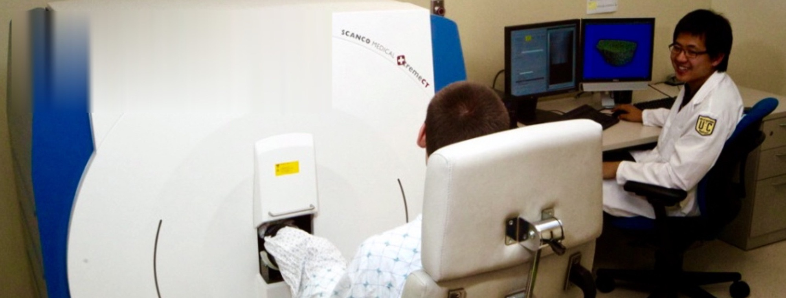
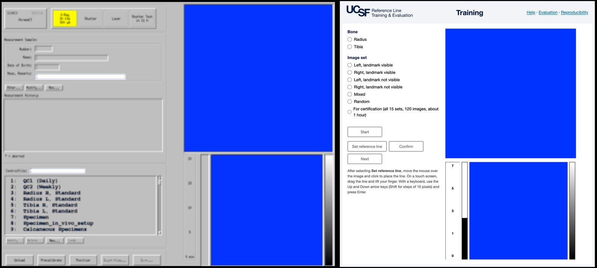
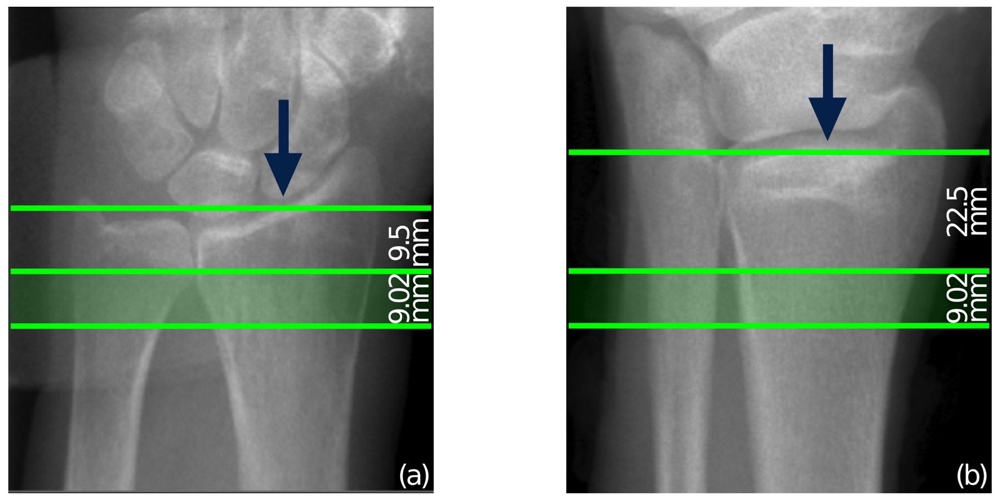
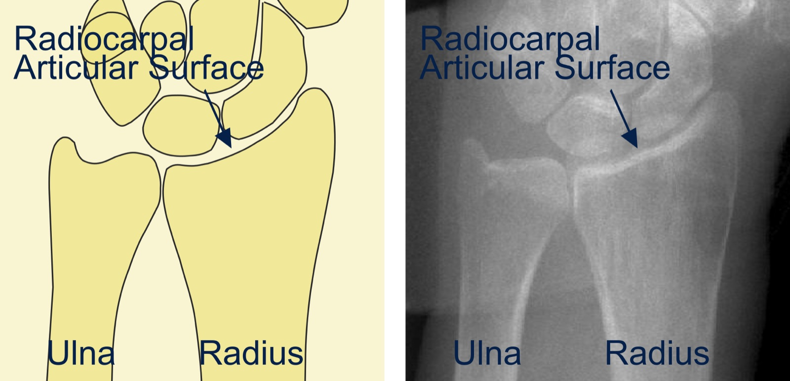
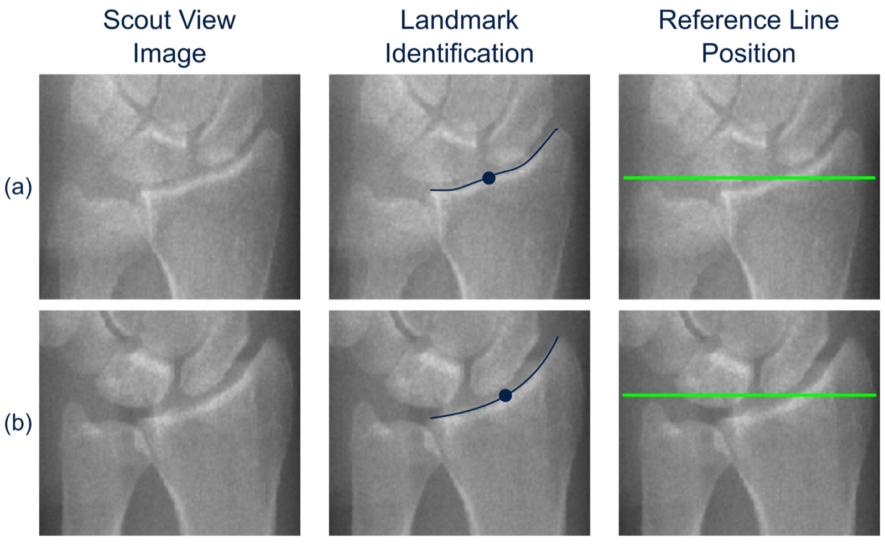
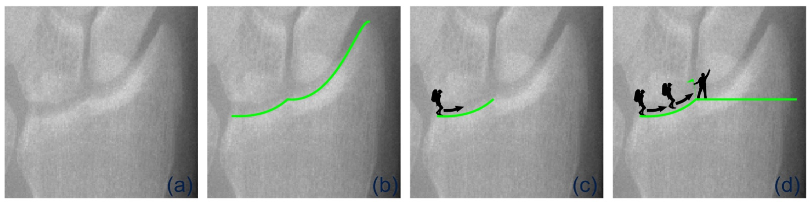
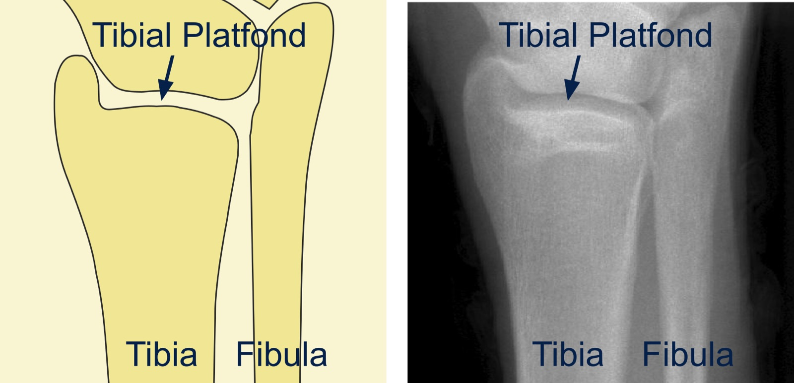
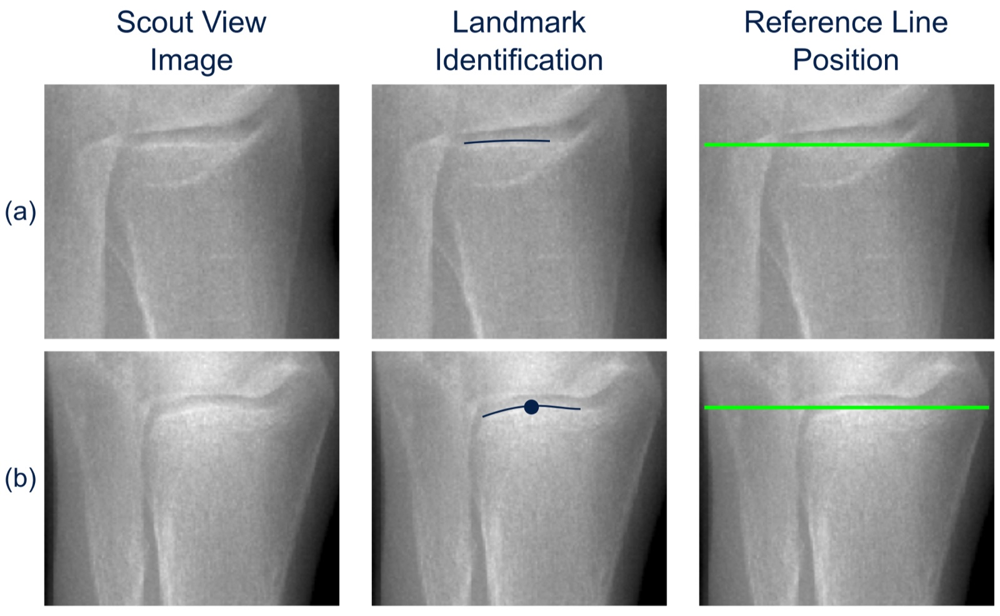

Reference Line Training & Evaluation
A tool for training and evaluating operator scan positioning for high-resolution peripheral quantitative computed tomography (HR-pQCT).
Modules
- Training Practice positioning the reference line with immediate feedback.
- Evaluation Pass three radius and three tibia sets to be certified.
- Reproducibility Measure your short-term intra-operator reproducibility.
As on the scanner workstation, the modules require a desktop or laptop computer with a mouse or trackpad and a browser window at least 900 pixels wide. They cannot be used on phones or tablets.
About
What is Reference Line – Training and Evaluation?
Reference Line – Training and Evaluation is a web application designed to train and evaluate HR-pQCT operators in positioning the reference line on scout view images.
It contains three modules: Training, Evaluation, and Reproducibility. Each module simulates the acquisition software of the XtremeCT system (Scanco Medical AG, Brüttisellen, Switzerland), reproducing how scout view images are displayed and how the reference line is positioned.

What is the purpose of a reference line positioning tool?
During a scan, HR-pQCT operators acquire an anterior–posterior 2D projection (scout view image) of the radius or tibia, on which they visually identify an anatomical landmark that determines the region to be scanned. The landmark corresponds to a peak in the mid-joint for the radius and to a peak in the distal articular plateau for the tibia, as indicated by the arrows in the figure below. Operators manually position a reference line at the landmark (green line), which determines the region to be scanned (green rectangle). In the standard protocol this region lies a fixed distance proximal to the reference line.

Visual identification of the landmark and positioning of the reference line can vary for a given operator as well as between operators. This shifts the region of interest and therefore affects measurements of morphological and densitometric parameters. To reduce these inconsistencies, this tool trains operators to identify anatomical landmarks and position the reference line, minimizing intra- and inter-operator variability.
How do I cite Reference Line – Training and Evaluation?
If you use Reference Line – Training and Evaluation to train operators taking part in your study, please cite:
Bonaretti S, Vilayphiou N, Chan CM, Yu A, Nishiyama K, Liu D, Boutroy S, Ghasem-Zadeh A, Boyd SK, Chapurlat R, McKay H, Shane E, Bouxsein ML, Black DM, Majumdar S, Orwoll ES, Lang TF, Khosla S, Burghardt AJ. Operator variability in scan positioning is a major component of HR-pQCT precision error and is reduced by standardized training. Osteoporosis International. 2017;28(1):245–257. doi:10.1007/s00198-016-3705-5
Credits
Software and website developed by Serena Bonaretti, Caroline Mai Chan, and Andrew J. Burghardt.
This study was funded by NIH/NIAMS R01 AR060700 and by The Osteoporotic Fractures in Men (MrOS) Study, which is funded by the National Institute on Aging (NIA), the National Institute of Arthritis and Musculoskeletal and Skin Diseases (NIAMS), the National Center for Advancing Translational Sciences (NCATS), and NIH Roadmap for Medical Research, under the following grant numbers: U01 AG027810, U01 AG042124, U01 AG042139, U01 AG042140, U01 AG042143, U01 AG042145, U01 AG042168, U01 AR066160, and UL1 TR000128.
Documentation
Radius
What is the anatomy of the radius joint?
To identify the anatomical landmark for positioning the reference line in distal radius exams, we focus on the articular surface of the radius in the radiocarpal joint of the wrist.

Where is the radius landmark located in scout view images?
The radius landmark is a peak of the radiocarpal articular surface of the radius. It separates the radiopaque subchondral bone (bright signal) from the radiolucent joint space (dark signal).
In simple cases (a), where a peak is clearly visible (dot), we position the reference line (green line) so that it intersects the peak of the crest at the edge of the joint surface. In more complicated cases (b), where no peak is visible, we use the midpoint of the curve that traces the articular surface of the radius. In both cases the articular surface is the edge where there is a clear transition between the radiolucent joint space and the radiopaque subchondral bone; the traced curve overlays that edge, and the reference line is positioned so that it intersects the curve.

When a crest is present in the scout view image, the Swiss hiker analogy describes where the reference line should intersect the curve. Imagine a hiker walking along the surface traced by the curve. The crest is a small hill the hiker must climb while crossing the joint surface, and at its peak the hiker plants a flag. The point where the flag is planted is where the correctly positioned reference line crosses the curve.

Tibia
What is the anatomy of the tibia joint?
To identify the anatomical landmark for positioning the reference line in distal tibia exams, we focus on the articular surface of the tibia at the tibial plafond.

Where is the tibia landmark?
The tibia landmark is the plateau or the crest of the tibial plafond, which separates the radiopaque subchondral bone (bright signal) from the radiolucent joint space (dark signal).
When the tibial plafond is flat (a), we position the reference line (green line) so that it overlays the thin, high-intensity plateau of the plafond. When there is a crest in the tibial plafond (b), we identify the landmark as the peak of the crest (dot) and position the reference line so that it intersects the thin, high-intensity margin at that peak. Note that for the tibia the reference line cuts through the center of the high-intensity plateau rather than the surface crest, as it does for the radius.

Training module
What is the Training module?
The Training module lets HR-pQCT operators practice positioning the reference line on scout view images, with feedback after every image.
How do I use the Training module?
You train on image sets of 8 images each. Choose a category: limb laterality (left or right) combined with landmark visibility (visible or not visible), a mixed set (combined laterality and landmark visibility), or a random set. Each category has 3 sets, which are presented in turn. Landmark visibility refers to the Scanco landmark, so when the radius proximal margin landmark is selected, the categories are by laterality only (6 sets each). Before moving to the Evaluation module, complete For certification, which contains all 15 training sets (120 images, about 1 hour).
- Open the Training module.
- Choose the bone: Radius or Tibia. For the radius, also choose the landmark definition.
- Choose an image set, then select Start. The first image appears.
- Select Set reference line. A green reference line appears on the image.
- Move the line with the mouse and click to place it. (Keyboard alternative: Up and Down arrow keys, then Enter. The keyboard is allowed for practice, but lines placed with the keyboard do not count in the Evaluation and Reproducibility modules.)
- To reposition, select Set reference line again. When satisfied, select Confirm.
- Feedback appears: Exact (correct position), Good (within 2 pixels), or Out of range (more than 2 pixels). The correct position is drawn as a blue line, and a progress bar shows how many images you have completed.
- Select Next to continue to the following image.
- After the last image, a summary compares your lines to the correct position and counts Exact, Good, and Out of range positions, and positions distal (above) or proximal (below) to the correct position.
- Close the summary and choose another set to continue training.
Evaluation module
What is the Evaluation module?
The Evaluation module assesses HR-pQCT operator performance and certifies operators.
How do I use the Evaluation module for certification?
After training on the For certification sets of radius and tibia images, move to evaluation. To be certified, you must pass at least 3 sets for the radius and 3 sets for the tibia. Radius sets are counted separately for the Scanco and proximal margin landmark definitions. To pass a set, all 8 positions must be Exact or Good; a single Out of range position fails the set. The count of passed sets is kept only for the current session, so keep the module open until you are certified. If you have difficulty, return to the Training module for more practice before starting a new evaluation session.
- Open the Evaluation module.
- Choose Radius or Tibia (and, for the radius, the landmark definition), then select Start. A random evaluation set of 8 images is loaded.
- Position and confirm the reference line on each image as in the Training module. Use the mouse: a set in which any line is placed with the keyboard does not count toward certification.
- After the last image, a summary shows your Exact, Good, and Out of range counts, positions distal or proximal to the correct position, and the number of sets you have passed in this session.
- When you have passed 3 sets for a bone, a certification message appears, with a printable certificate.
Reproducibility module
What is the Reproducibility module?
The Reproducibility module measures HR-pQCT short-term intra-operator reproducibility.
How do I use the Reproducibility module?
The module uses 15 radius images and 16 tibia images. Each image is shown three times in random order, for a total of 45 radius or 48 tibia images. No feedback is given per image. After you complete the whole set, a table shows your three positions for each image and their standard deviation, and your reproducibility score (the root mean square of the standard deviations), with whether it falls within the range of experienced operators.
- Open the Reproducibility module.
- Choose Radius or Tibia, then select Start.
- Position and confirm the reference line on each image with the mouse, then select Next. If any line is placed with the keyboard, the score is not accepted.
- At the end, review your results. You can print them or close the summary to start a new session.
Contact Us
If you have any questions or comments, please email andrew.burghardt@ucsf.edu.